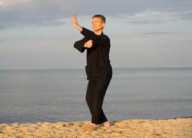

Practitioners say that tai chi - a 600-year-old dancelike exercise derived from the martial arts - clears the mind, relaxes the body, and contributes to health and longevity. Tai chi originally came to the United States with the arrival of Chinese immigrants following the Civil War. And it’s become increasingly popular - both as a gentle form of meditative exercise, and as a way to cope with many illnesses.
Translated into English, tai chi variously means: “supreme boxing,” “the root of all motion,” and “optimal fist fighting.” It is considered a martial art, but unlike the more combative styles, tai chi is based on fluidity and circular movements. Tai chi masters say that this gentle dance develops the flexibility of child, the strength of a lumberjack and, eventually, the wisdom of a sage.
Tai chi embodies the Chinese idea that life is based on life energy, or chi. Many tai chi forms incorporate movement of the arms as though one is gently holding a big beach ball of chi. Based on the Chinese worldview, tai chi divides chi into two equal, opposite and complementary parts, yin and yang. Tai chi incorporates the yin-yang unity of opposites in many ways, for example, during tai chi routines, the weight shifts repeatedly from one leg to the other and the arms move in opposite, yet complementary directions. Deep meditative breathing is also central to tai chi.
People new to tai chi often remark that masters of this art seem oddly ageless. They look like they might be anywhere from 30 years old to 80. It’s hard to tell. The Chinese say that tai chi is a major boon to health and longevity, which is why so many elderly people practice it. It’s also very gentle, so the elderly can practice it.
But is tai chi really a boon to health? It has not been the subject of as much scientific research as meditation or yoga, but dozens of studies show that it provides major health benefits, especially for the elderly. A sampling of recent evidence:
Fall prevention. When the elderly fall, hip fracture is a major risk - one that’s possibly life-threatening. During the year after a hip fracture, 25 percent of people die. Among those who survive, only one-third ever regain their independence. And within a year of hip fracture, 20 percent of people must move to a nursing home, accounting for 180,000 U.S. nursing home placements per year. Tai chi improves balance and helps prevent falls. Australian researchers enrolled 351 people, average age 69, in weekly, one-hour tai chi training that lasted four months. Compared with a control group that did not study tai chi, those who did reported 33 percent fewer falls.
General health and fitness. Tai chi may be gentle, but it improves fitness, especially in the elderly. Korean researchers enrolled 23 nursing home residents in a 12-week tai chi program. By the end of it, compared with a control group that did not participate in the tai chi program, those who did showed significantly improved balance and flexibility, better physical function, and improved general health. A study in Hong Kong shows that tai chi also improves muscle strength and stamina.
Parkinson’s disease. Parkinson’s impairs mobility. Researchers at Washington University in St. Louis enrolled 17 people with Parkinson’s in a 20-hour tai chi training program over 12 weeks. Afterward, compared with untrained controls, the tai chi group showed significantly improved balance and the ability to stand up and walk backward.
Osteoarthritis. Many elderly people - and quite a few younger folks - suffer stiff, sore, painful arthritis of the knee. Korean scientists recruited 46 people, average age 75, for a tai chi class that met two hours a week for 12 weeks. At the class’s conclusion, compared with a control group who did not learn tai chi, those who did reported less knee pain, stiffness and disability, and improved balance and knee mobility.
Osteoporosis. Weight-bearing exercise (walking, dance, tennis or gardening, but not swimming or biking) improves bone mineral density and reduces risk of bone loss. Tai chi is also weight-bearing exercise, and researchers in Hong Kong have shown that it improves bone mineral density.
Blood Pressure. Harvard researchers reviewed 26 studies of tai chi’s effects on blood pressure, a key risk factor for heart disease and stroke. Twenty-two of them (85 percent) showed that tai chi lowers blood pressure significantly.
Heart disease. Researchers in Taiwan report that in addition to reducing blood pressure, tai chi also lowers cholesterol, improves heart and arterial function, and speeds healing in post-heart-attack and post-bypass rehabilitation.
Heart Failure. When the heart becomes chronically fatigued, it can’t pump blood around the body efficiently, and the body suffers a loss of oxygen and nutrients. Over time, this becomes life-threatening. Harvard researchers gave 30 heart failure sufferers standard medical care, and in addition, enrolled half of them in a tai chi program. After 12 weeks, those in the tai chi group showed increased stamina and improved quality of life.
Diabetes. Chinese researchers measured the blood sugar levels of 12 people with type-2 diabetes and then trained them in tai chi. After eight weeks, their blood sugar levels decreased significantly.
Sleep. Exercise improves sleep quality, but many elderly people have difficulty exercising. UCLA researchers identified 112 people, age 59 to 86, and enrolled some in a tai chi program while the rest took a health-education class. After 25 weeks, the tai chi group reported fewer sleep problems and better sleep quality.
Depression. Exercise improves mood. Hong Kong researchers taught tai chi to outpatients at a psychiatric clinic who were being treated for depression. After 36 tai chi sessions, compared with controls who did not learn tai chi, those who did showed fewer depressive symptoms.
Most tai chi teachers say it takes about a year to learn one of the 50-move “short forms” popular in the United States. However, it takes a lifetime to master them. Tai chi classes are available throughout the United States. To find one in your area, search Google or your phone book, or ask a practitioner of acupuncture or Chinese medicine.
If you’d rather start at home, the best approach is to buy a DVD, for example Simplified Tai Chi Chuan. Other good sources of tai chi information and DVDs include Tai Chi Magazine and Taichiflow.com.
Michael Castleman, of San Francisco, has been called “one of the nation’s top health writers” (Library Journal).
|
 ISTOCKPHOTO Depression and diabetes are just a couple of the ailments that a tai chi practice can help you fight. |
|
|